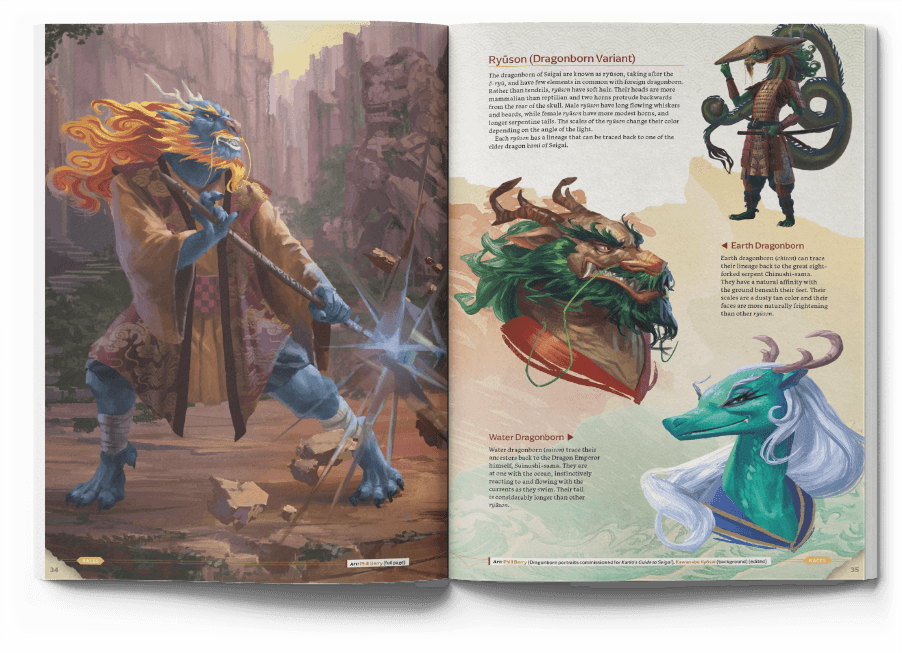

Kunio's Guide to Seigai
Second Release
Welcome to the land of Seigai, ruled by the chinushi-zu daimyō, descendants of the great eight-headed dragon Chinushi-sama.
Seigai is a fantasy reimagining of late Sengoku-era Japan for Dungeons & Dragons 5th Edition, drawing inspiration from folk tales and real history, as well as modern media.
Within the 92 page PDF, you will find:
- 7 new playable races
Ryūson, Shapechangers (Bakeneko, Kawauso, Kitsune, Mujina, Tanuki), Bunagaya, Kappa, Korpokkur, Masaru, and Half-Oni - 22 Yōkai statblocks
- 30 plothooks
- 6 new spells
- 4 new feats
- Reimagined equipment
- Bespoke maps
- Detailed world lore
- Inspiring art on every page
…and lots more besides!
Last updated October 28th 2020
A note from Ross, the author
Kunio’s Guide to Seigai: Second Release will always be free! Having art commissioned, employing proof-readers, and making sure they got paid properly did however did cost a fair amount of my own money. If you’d consider helping me cover some of the costs of this guide and support my future work by buying me a coffee, I will be very grateful. Just click on the button below! Cheers. —Ross
These artists gave their permission for use of their work in Kunio’s Guide to Seigai:
Alejandro Pacheco, Andreas Husballe, Clare Hardy, Daiany Antunes, Devon Cady-Lee, Dylan Choonhachat, EA Howell, Gehan Mounir, Géraud Soulié, Imed Gharzouli, Kelley McMorris, Kevin Le Moigne, Manami Maxted, Matt Lara, Naomi VanDoren, Nick Serpilov, Phill Berry, Reishi, Rio Sabda, Robson Michel, sachi, Silviu Sadoschi, Simon Dominic Brewer, Somei Yoshinori, Surendra Rajawat, Syrphin, Takahisa Kashi, tippi Lim, TomoRo, Yasu Matsuoka, Yoshiya Katsuren, 三日月雪風